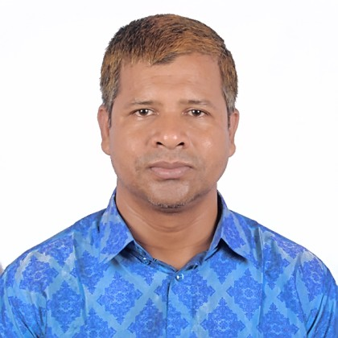
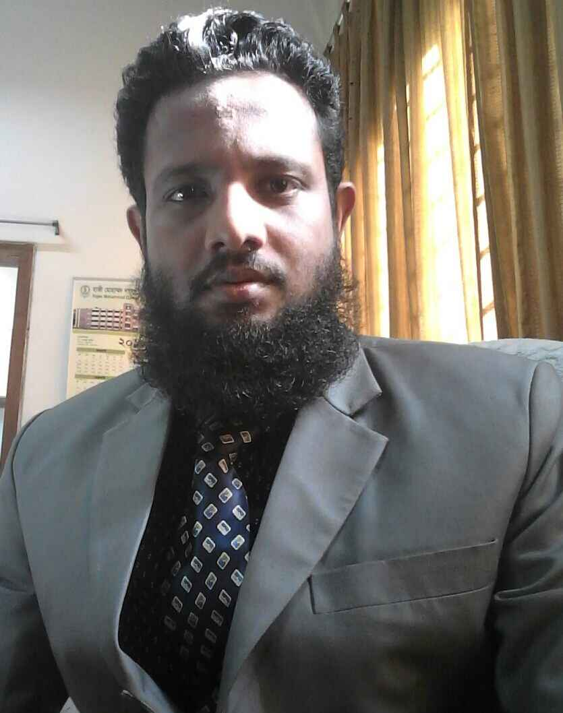
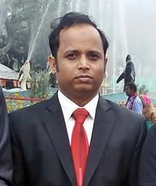
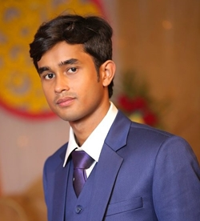
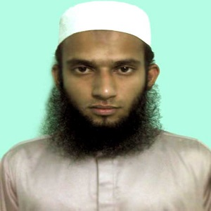
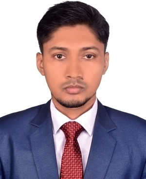
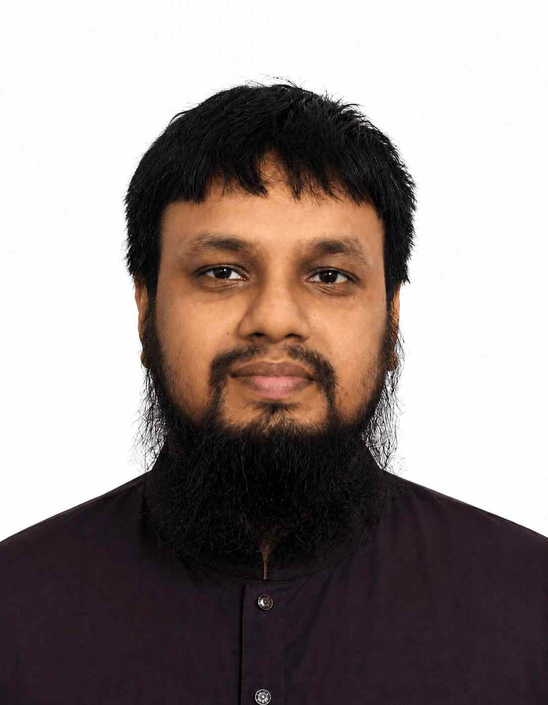
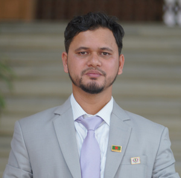
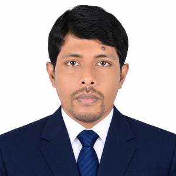

Chairman · President of the club
Prof. Dr. Md.
Zamil Sultan
Professor & Chairman, Department of EEE, HSTU
Nothing is too wonderful to be true, if it be consistent with the laws of nature.
Our advisors from the Department of Electrical & Electronic Engineering guide the club’s projects, competitions and research — and keep our ambitions grounded in good engineering.

Nothing is too wonderful to be true, if it be consistent with the laws of nature.
Hover to bring them into colour








Photos and titles from the HSTU EEE department page.